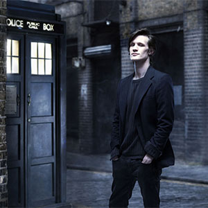

[Primary Navigation]

The First Doctor |
| The Second Doctor |
| The Third Doctor |
| The Fourth Doctor |
| The Fifth Doctor |
| The Sixth Doctor |
| The Seventh Doctor |
| The Eigth Doctor |
| The Ninth Doctor |
| The Tenth Doctor |
The Eleventh Doctor |
| The Twelfth Doctor |
The Eleventh Doctor
Portrayed byMatt Smith
The Eleventh Doctor is the eleventh incarnation of the protagonist of the BBC television science fiction series Doctor Who. He is played by Matt Smith, who appears in three series as well as seven specials, over an almost four-year period. As with previous incarnations of the Doctor, the character has also appeared in other Doctor Who multimedia.
Within the series' narrative, the Doctor is a centuries-old alien, a Time Lord from the planet Gallifrey, who travels in time and space in his TARDIS, frequently with companions. When the Doctor is critically injured, he can regenerate his body but in doing so gains a new physical appearance and with it, a distinct new personality. Smith portrays the eleventh such incarnation, a quick-tempered but compassionate man whose youthful appearance is at odds with his more discerning and world-weary temperament. His main companions included feisty Scot Amy Pond (Karen Gillan), her husband Rory Williams (Arthur Darvill) and the mysterious Clara Oswald (Jenna-Louise Coleman). He also frequently appeared alongside River Song (Alex Kingston), a fellow time traveller with whom he shared a romantic storyline, and was the last Doctor to appear alongside the long-serving companion Sarah Jane Smith (Elisabeth Sladen) prior to the actress' death, featuring in two episodes of the spin-off programme The Sarah Jane Adventures.
The Eleventh Doctor is portrayed as a brash and lively man who is rather lonely and very aware of his reputation as a fierce enemy to his adversaries (seen when he uses his reputation to scare away the Atraxi in "The Eleventh Hour" or clear the skies above Stonehenge in "The Pandorica Opens") but has a great deal of affection for his loved ones. He is at times childlike, arguably downright childish, which allows him to connect very well with children. However, there are also times when he acts his age, such as when he retires in Victorian London after the loss of Amy Pond and Rory Williams and becomes a grumpy and solitary man who refuses to interact with others until he is charmed by Clara Oswald. Unlike his two most immediate predecessors, this Doctor seems ignorant of the details of human popular culture, beyond a few references to classic literature, and is often seen embarrassing his companions with his attempts to be cool (including enthusiastic dancing). He even shows ignorance of adult activities such as sharing a bed, providing bunk beds in the TARDIS for the married Ponds, and drinking wine before spitting it back into the glass after trying it. He is also inept at responding to romantic advances, acting awkwardly when River Song and Amy try to seduce him; however, there are times when he behaves more maturely in romantic situations, frequently flirting with River and eventually marrying her, despite his usual discomfort with romance.
This incarnation was very cheerful, charismatic and enthusiastic, often at inappropriate times even in danger, much like his next incarnation. While previous incarnations intentionally flouted social conventions, the tenth incarnation was genuinely shocked when he realized that he was being rude or uncouth. He occasionally got into trouble because of an apparent sense of superiority over those less "clever" than he was. He regularly used his name as a threat, which only rarely worked, despite his apparent expectations.